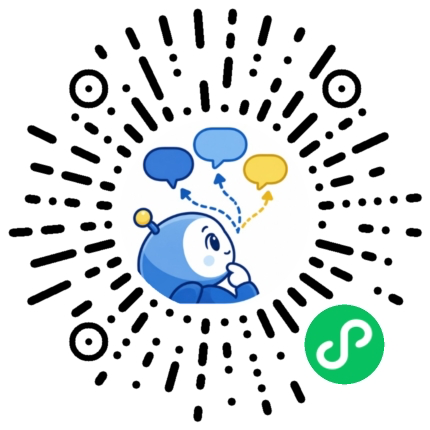
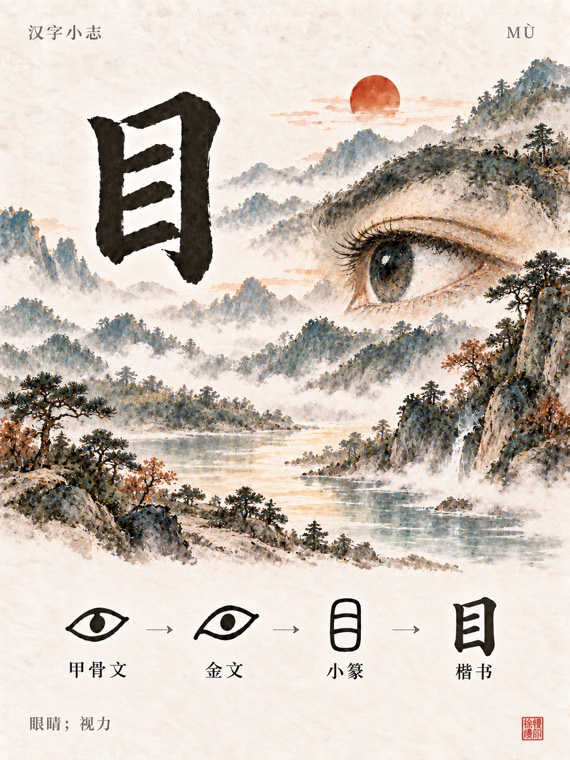
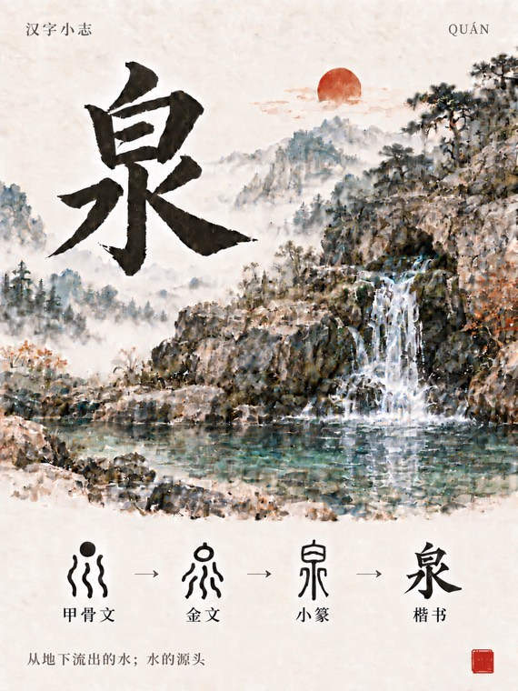
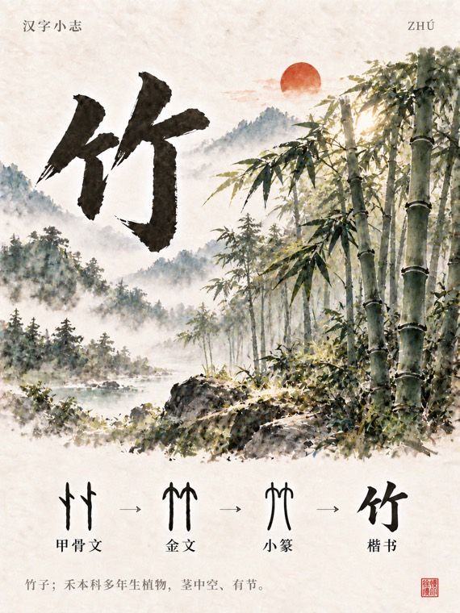
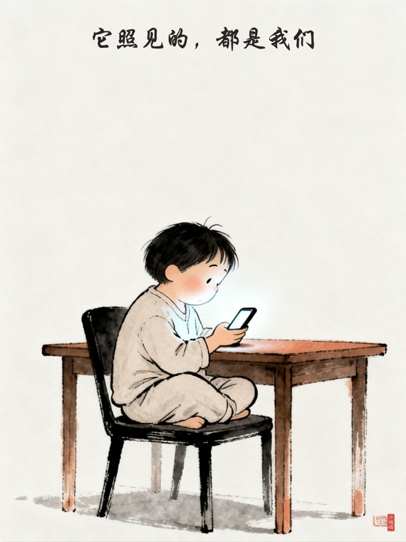
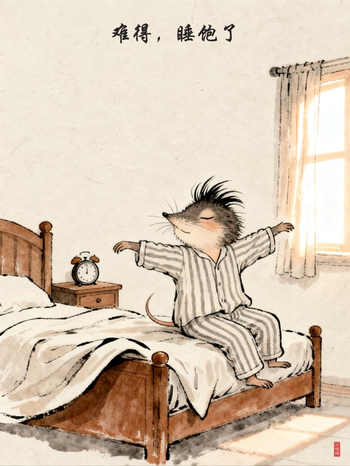
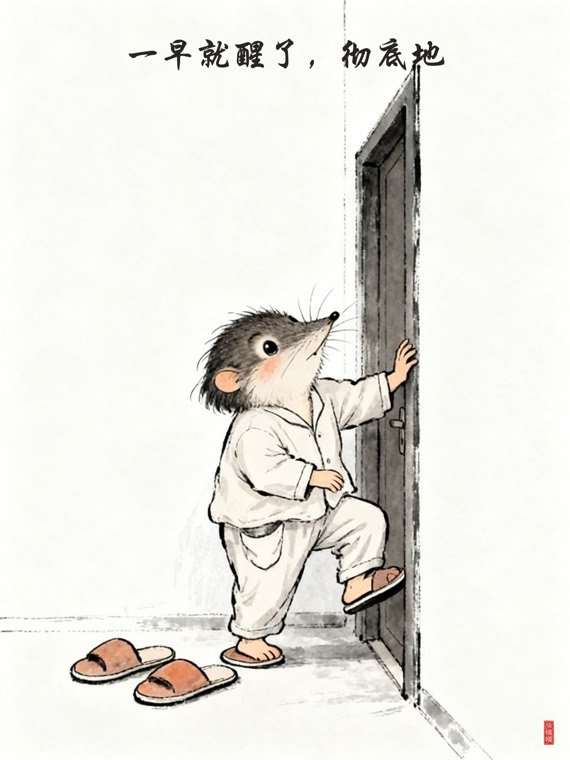

Cru · 好开心
自 2026
白天上班，
晚上写点自己的东西。
都做了什么
All Work · 06（个人介绍为初版文案，待替换 · 配图待补）
Works
微信内打开即用
两个小程序
两个都在微信里，点开就用，不用注册，不用登录。
一个是沟通误解消解 —— 把一句说拧了的话拆开看；
一个是边界表达训练 —— 把不敢说的话先练一遍。
做完的事不上传，分析完的对话不留存，记录只在你自己手机里。
No. 01
已上线 v1.0.1

微信扫码打开让我捋捋
把一句让你不舒服的话、或一段聊崩的对话贴进来。给你一个主解释 + 两个备选解释、信息缺口清单、安全风险提示，以及一句可直接复制的低对抗求证话术。
不读心，不判定对方人格
不用性格差异解释威胁行为
分析默认不落库，只有主动保存才写库
界面 待补
界面 待补
界面 待补
No. 02
持续迭代中
怼怼上线
小程序码待补
怼怼上线
选一个场景开一局，两轮剧情，你来回应。四类场景各 5 个：职场、亲密与家庭、朋友熟人、陌生人。识别你这次的回应倾向 —— 边界表达 / 策略化解 / 情绪反击 / 沉默回避，并给出另一种可能的说法。
不打数字分数，不设唯一正确答案
有的场景，忍住不说也是一种答案
记录只存在你自己手机里
界面 待补
界面 待补
界面 待补
（小程序码与界面截图待补）
Backstage
不对外 · 无界面
幕后 agent
四个 agent 跑在我自己的电脑上，没有界面，也不对外开放。
它们分工接住我内容流程的每一段 —— 听播客、采参考、写图文、填后台，
一路做到待审草稿就停手。发布那一步，永远是我自己点。
Agent A
播客 → 文字稿 · 起步阶段
耳朵翻译官
把听过的播客变成能检索的文字
丢一个播客链接进去，它自己去找并验证 RSS，拿到音频后交给转写服务，产出带时间戳的文字稿和 PDF，最后存进我的 Obsidian 笔记库。目前还在搭基座，只有两次提交。
流程 Flow
01收到播客链接→
02发现并验证 RSS→
03音频转写→
04出 PDF→
05存入笔记库
成品 Output
文字稿 PDF
笔记库条目
RSS 验证记录
Agent B
参考 → 二创建议 → 成图
图片创作魔法师
每天自动出图，出完过两道验收
每天从即梦采集参考作品，先给出「再创建议」，再按建议出图（1536×2048 线稿风）。图出来后要过两道关 —— 文件完整性检查 + 视觉复核 —— 都过了才写回飞书多维表格，交接给红薯草稿官。有文件锁防重跑，中途断了能续传。
流程 Flow
01采集即梦参考作品→
02生成二创建议→
03生图 1536×2048→
04双重验收→
05写回飞书表格
成品 Output
线稿风成图
二创建议
表格记录
Agent C
本地工作台 · 小红书草稿
红薯草稿官
哪块不满意，就只重生成哪一块
跑在本地的 Next.js 工作台，SQLite 落库。三种内容类型，图片 / 标题 / 正文 / 标签分开编辑、分开重生成，不用整篇推翻。海报用 satori + resvg 排好版，最后我自己扫码存成小红书草稿。飞书消息和多维表格双向桥接。
流程 Flow
01选内容类型→
02分别生成图 / 文 / 标签→
03海报排版→
04我扫码确认→
05存为草稿
成品 Output



Agent D
公众号文章 + 微信贴图
微信草稿官
一路填到后台，然后停手
两条线：公众号文章和微信贴图。文章素材从 Obsidian 的「微信/」目录来，贴图记录走飞书多维表格，用 Playwright 操作微信后台填内容，配图统一走 image_gen。每条都有状态：待创作 → 待重试 → 待审核 → 待发布 → 已完成。10 月基本每天都有产出。
流程 Flow
01笔记库 / 表格取素材→
02生成正文与配图→
03Playwright 填后台→
04停在待审核
成品 Output



它们只做到草稿。
发布那一步，永远是我自己点。